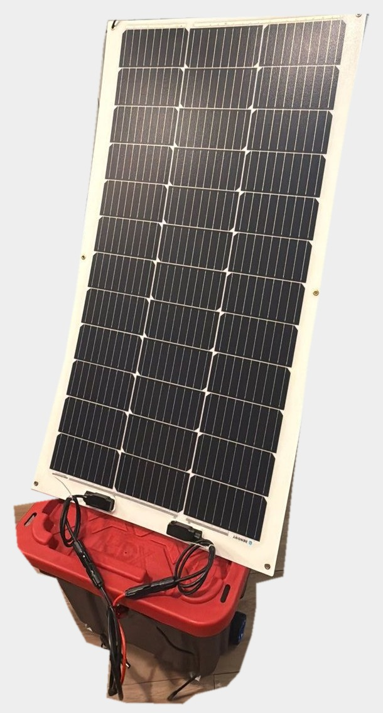
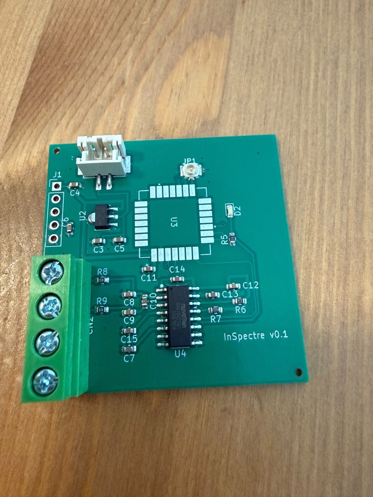
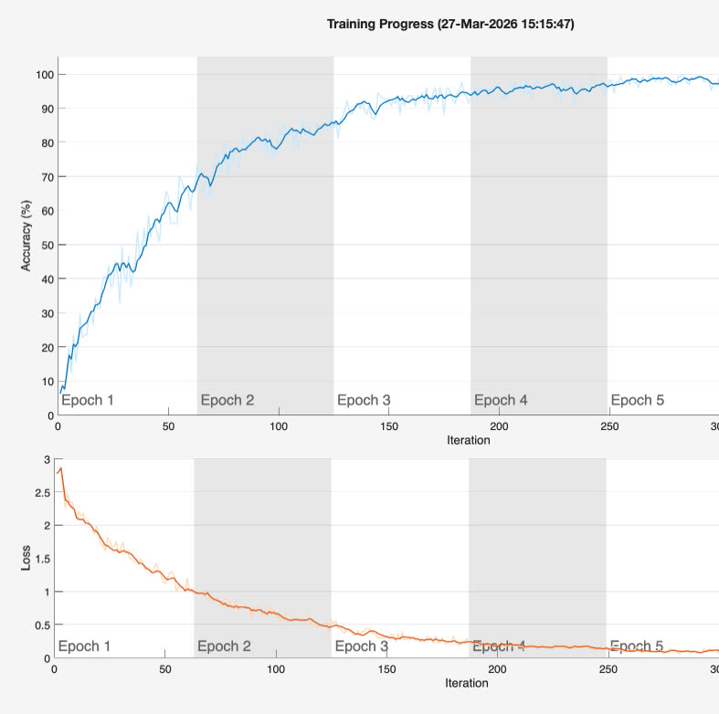

B.S. Mechanical Engineering (Georgia Tech) & B.S. Computer Science (Emory), May 2026. Toronto, Canada.
nueki3@gatech.edu · github.com/nicholasueki · linkedin

Solar rover that talks, recognizes people by face, and remembers them. Two Raspberry Pi 5s and a laptop run every model locally.
100 W panel, 256 Wh battery, 25 to 39 W draw. 5.5 to 8.5 hours with no sun.
ESP32 runs motor PID at 200+ Hz and stops within 500 ms of a lost heartbeat.
[raspberry pi 5, esp32, python, local llms, face recognition] · personal project, in progress

Load-cell scales that sit under grocery produce and flag items that sold out while the store's system still shows stock.
Built three hand-wired prototypes over two revisions. One runs in a national grocery chain.
Designed a custom board in KiCad (LoRa-E5, NAU7802 24-bit ADC, USB-C charging). First batch is back; firmware bring-up in progress.
[kicad, lora, load cells, 3d printing] · georgia tech startup capstone, 5-person team · repo private
Two-wheeled robot on an STM32 Nucleo, written in C.
Replaced the kit's PID controller with my own and tuned the gains on the robot.
Spin it on a turntable and it uses wheel odometry to return to its starting heading.
[stm32, c, pid, imu, encoders]
Two model trains on one multi-loop layout, routed by an STM32 Nucleo in C.
Ultrasonic sensor and powered switch at every junction. The controller tracks each train from junction crossings alone.
[stm32, c, ultrasonic sensors] · mechatronics course
Autonomous robot for the Georgia Tech ME 2110 design competition. No human input after the start signal.
Arduino state machine fires pneumatic arms and a motor-driven lift on timed delays.
The claw has no motor. Pressing onto the payload releases an elastic band that snaps it shut.
[arduino, c++, 3d printing] · 4-person team
Personal flight concept that folds into a wearable backpack. Full SolidWorks assembly, 16+ custom parts in 5 subassemblies.
I led the folding wings (5 segments per side), the airbrakes, and the control stick.
[solidworks] · 4-person team

Three CNN designs in MATLAB, trained on MNIST (70,000 digits).
Design 1 stayed at 10%, the same as guessing. Design 3 reached 99% in 15 seconds on one CPU.
[matlab, deep learning toolbox]
last updated october 2026